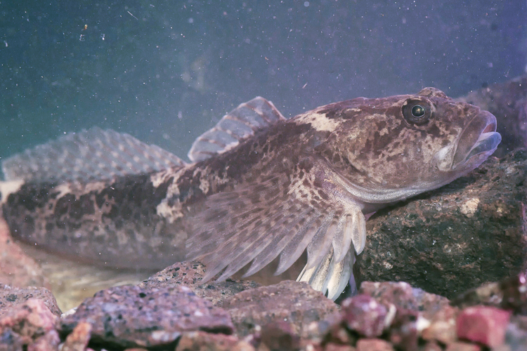

Scomparso o divenuto raro nei principali corsi d’acqua di fondovalle e nella maggior parte dei loro affluenti a causa dell’alterazione degli ambienti acquatici, nella seconda metà del XX secolo lo scazzone ha conservato popolazioni significative solamente in alcune acque di sorgente e in pochi ruscelli.
Lo scazzone (Cottus gobio) presenta un aspetto caratteristico che lo rende inconfondibile! Ha una testa molto grande (gli inglesi lo chiamano Bullhead) e appiattita, due occhi grandi e ravvicinati, pinne larghe e coda arrotondata. Due spine sono situate vicino all'apertura delle branchie. Le pinne pettorali sono sempre grandi e tenute ben aperte mentre quelle dorsali sono due, di cui la prima molto bassa, spinosa e molto più piccola della seconda.

Non supera mai i 15 cm di lunghezza e la colorazione è sui toni del marrone o del grigio-verdastro con macchie più scure e anche le pinne presentano fasce concentriche più scure. Il suo habitat prediletto è dato dalle zone in cui la vegetazione ripariale viene periodicamente allagata dall'acqua del fiume, ha abitudini prevalentemente notturne e di giorno si rintana tra sassi e piante acquatiche. È un pesce schivo e non facile da vedere! Si alimenta prevalentemente di invertebrati, come insetti e crostacei che vivono sul fondale del fiume. La riproduzione avviene a maggio, la femmina depone le uova di colore arancione che vengono poi protette dal maschio.
Lo scazzone è un ottimo indicatore di qualità dell'ambiente acquatico: infatti prolifera solo in acque assolutamente pulite. Purtroppo questa specie, non minacciata dall'inquinamento delle acque, lo è dalla scomparsa progressiva dei suoi habitat in seguito alla regimentazione delle acque fluviali, le continue immissioni di trote per la pesca sportiva e l'abbassarsi del livello del fiume. In passato era considerato una prelibatezza culinaria: lo troviamo nei ricettari del XVI secolo, alla corte del principe vescovo di Trento Cristoforo Madruzzo, paragonato alle lamprede e alle trote!